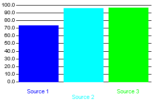
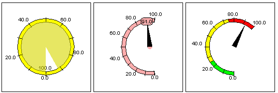
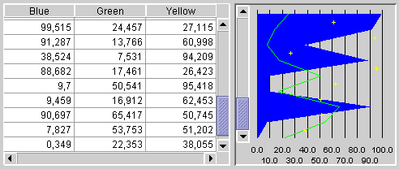
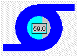

Provides real-time graph & charts beans.
This package contains five main groups of classes and interfaces:
-
Graphs: bar graphs, histographs, ellipsegraphs

-
Meters

-
Trends

-
Industrial controls (Thermometer, Knob, SevenSegment display)
-
Specialized backgrounds : Tank & Pump

Package Specification
(none)
Related Documentation
For overviews, tutorials, examples, guides, and tool documentation, please
see: